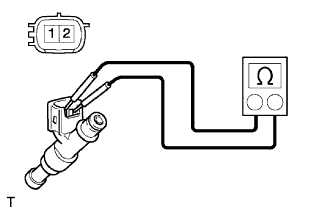
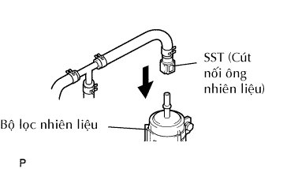
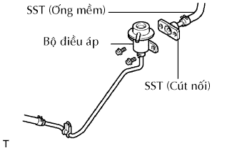
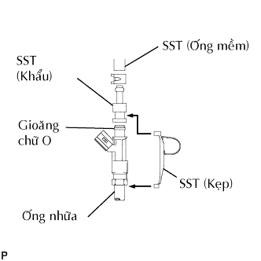
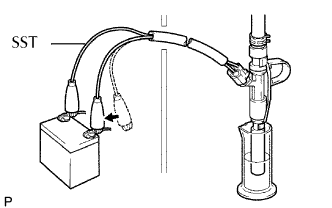
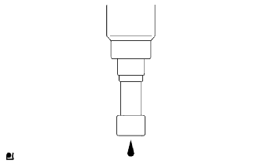

VÒI PHUN NHIÊN LIỆU > KIỂM TRA |
| 1. KIỂM TRA CỤM VÒI PHUN |
|  |
Đo điện trở giữa các cực.
| 2. KIỂM TRA LƯU LƯỢNG PHUN VÀ RÒ RỈ |
Lắp SST vào như trên hình vẽ.
Xả áp suất của hệ thống nhiên liệu (Xem trang Kích chuột vào đây).
Ngắt ống nhiên liệu chính (cút nối ống nhiên liệu) ra khỏi bộ lọc nhiên liệu.
Tháo bu lông và ngắt bộ điều áp nhiên liệu ra khỏi ống phân phối.
|  |
Lắp SST vào bộ lọc liệu liệu.
|  |
Lắp SST vao đầu nhiên liệu vào của bộ điều áp nhiên liệu bằng 2 bu lông.
Lắp gioăng chữ O vào vòi phun.
|  |
Hãy lắp SST (cút nối và ống) vào vòi phun, và giữ vòi phun và cút nối bằng SST (kẹp).
Để vòi phun vào cốc đo.
Vận hành bơm nhiên liệu.
Bật khoá điện ON.
Bật công tắc chính của máy chẩn đoán ON.
Hãy chọn thử kích hoạt và truy nhập và menu sau: Powertrain / Engine and ECT / Active Test / Control the Fuel Pump / Speed.
|  |
Nối SST (dây điện) với vòi phun và ắc quy trong vòng 15 giây và đo lưu lượng phun bằng cốc đo. Thử mỗi vòi phun 2 hoặc 3 lần.
|  |
Kiểm tra rò rỉ nhiên liệu.
Trong các điều kiện trên, hãy tháo đầu đo của SST (dây điện) ra khỏi ắc quy và kiểm tra lượng rò rỉ nhiên liệu ra khỏi vòi phun.